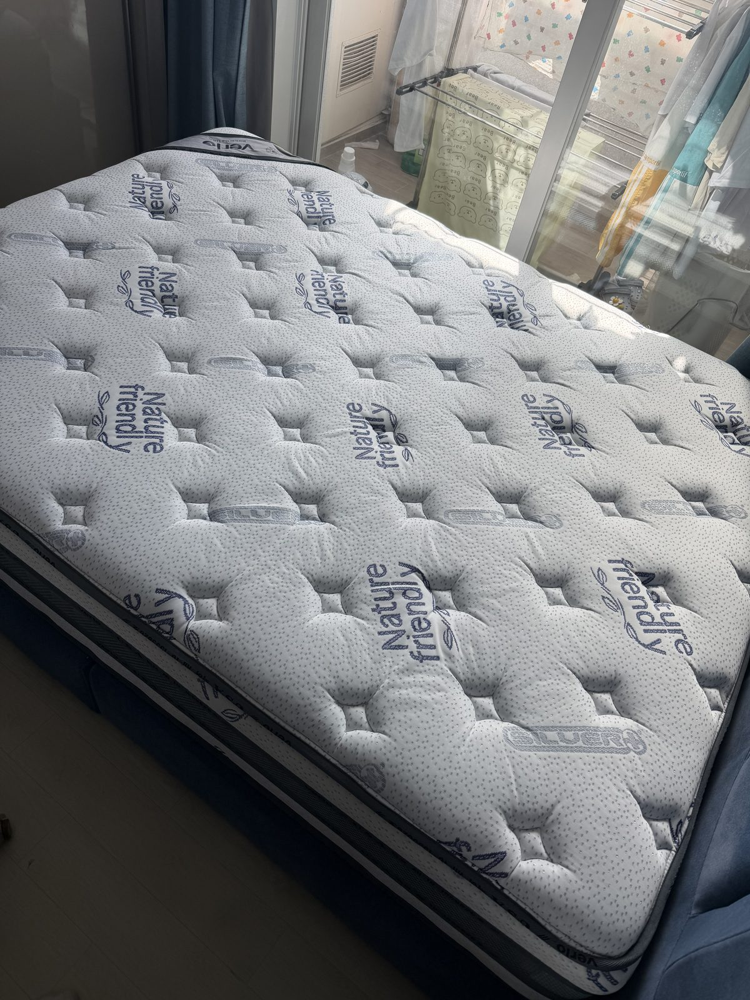
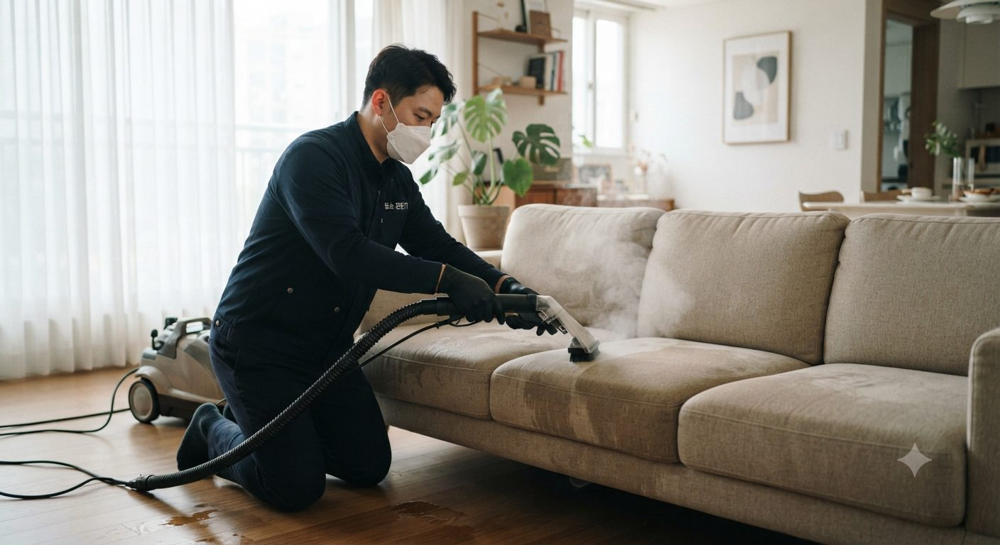
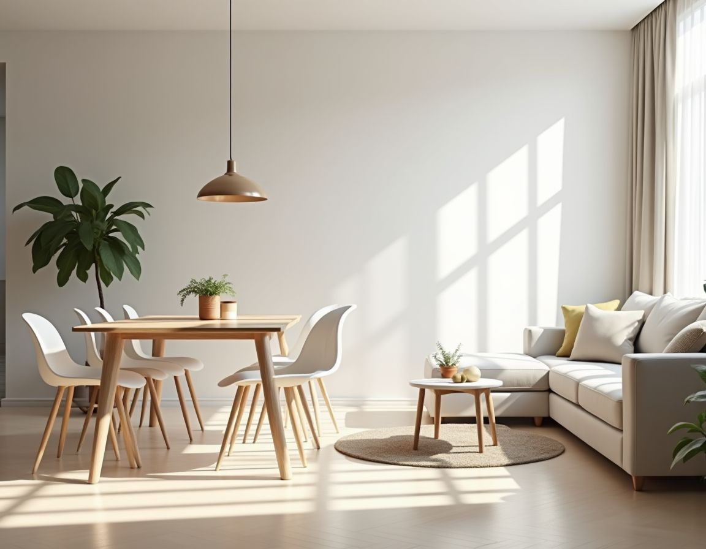
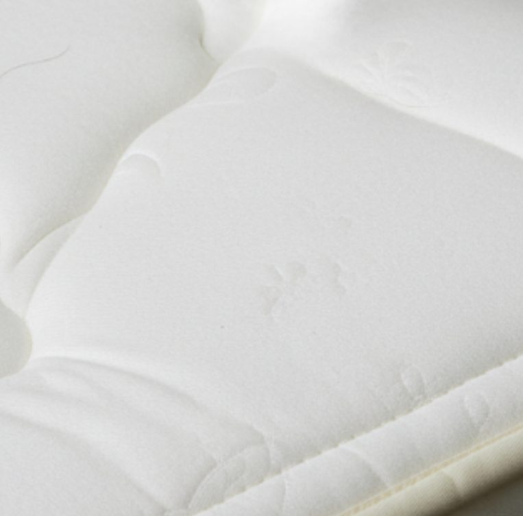
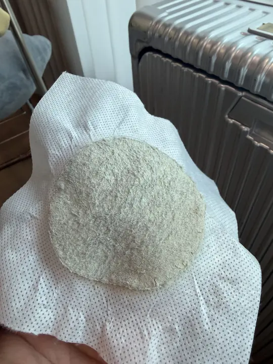
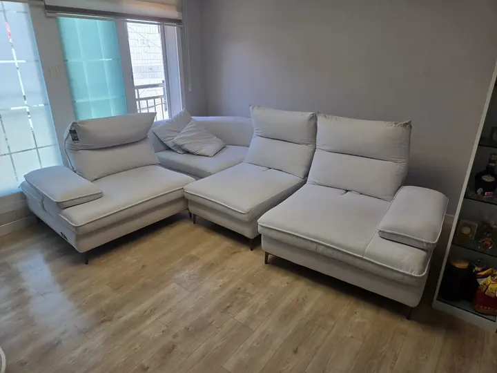

소변 · 배변
말라붙은 소변은 물에 녹지 않는 요산 결정으로 남습니다. 비 오는 날 냄새가 다시 올라오는 이유입니다.
소변 청소 방법인프케어(INPE CARE)는 주식회사 인프가 운영하는 반려동물 가정 전문 소파 · 매트리스 청소와 바이러스 방역 서비스입니다. 강아지 · 고양이 소변 얼룩과 냄새 제거, 털 · 비듬 · 진드기 관리, 파보 · 칼리시 감염 이후의 생활 공간 방역을 한 번의 방문으로 처리합니다.
소파와 매트리스는 반려견이 가장 오래 머무는 곳이자 사람 피부가 매일 닿는 곳입니다. 겉으로 보이는 얼룩보다 섬유 안쪽에 쌓인 것이 더 문제입니다.
말라붙은 소변은 물에 녹지 않는 요산 결정으로 남습니다. 비 오는 날 냄새가 다시 올라오는 이유입니다.
소변 청소 방법패브릭 깊숙이 박힌 털과 각질은 진드기의 먹이가 됩니다. 청소기로는 표면만 정리됩니다.
딥클린 공정 보기방향제는 냄새를 덮을 뿐입니다. 냄새의 원인인 오염물을 빼낸 뒤 탈취해야 다시 나지 않습니다.
6단계 공정 보기치료가 끝나도 바이러스는 집 안에 남을 수 있습니다. 재감염과 새 아이 입양 전 방역이 필요한 이유입니다.
바이러스 방역 안내
PET URINE표면 얼룩만 지우면 냄새는 남습니다. 섬유 안쪽 요산 결정을 녹여 빼내고, 고온 스팀과 전문 탈취로 마감합니다.

DEEP CLEANUV-C 살균과 고성능 건식 흡입이 기본입니다. 오염이 깊다면 습식 세정과 스팀을 더합니다.

VIRUS CONTROL파보바이러스는 외피가 없는 바이러스라 알코올 소독으로 잘 사라지지 않습니다. 환경부 승인 항바이러스 성능 인증 제품으로 바닥 · 패브릭 · 생활 용품 주변까지 방역합니다.
모두 인프케어 현장에서 직접 찍은 사진입니다.


BEFOREAFTER실제 시공 · 매트리스 누런 얼룩 제거 (좌우로 밀어서 비교)
아래 카드는 같은 집, 같은 가구에서 나온 필터입니다. 카드를 눌러 확인해 보세요.
 화이트 패브릭 소파FRONT
화이트 패브릭 소파FRONT
이 소파에서 나온 필터FILTER 그레이 매트리스FRONT
그레이 매트리스FRONT 이 매트리스에서 나온 필터FILTER
이 매트리스에서 나온 필터FILTER
ㄱ자 패브릭 소파FRONT 이 소파에서 나온 필터FILTER
이 소파에서 나온 필터FILTER 이 매트리스에서 나온 필터FILTER
이 매트리스에서 나온 필터FILTER스크롤을 내리면 공정이 진행됩니다.
UV-C 자외선으로 세균 · 바이러스 · 진드기를 약품 없이 살균합니다.
강력 흡입으로 섬유 깊숙이 쌓인 먼지 · 털 · 각질 · 알레르기 유발 물질을 빼냅니다.
소재별 맞춤 세정제로 얼룩 · 소변 오염을 분해하고 딥클리닝으로 세척합니다.
고온 스팀으로 섬유 조직 속 잔여 오염물과 세균을 처리합니다.
소파 · 매트리스 하부와 틈새까지, 보이지 않는 오염 구역을 확인합니다.
음이온으로 실내 공기를 정화하고 아로마로 마무리합니다.
온라인으로 접수된 신청서를 개인정보를 가린 상태로 보여드립니다.
평균 만족도 · 500개 이상 리뷰 기준
“소파 습식 클렌징 후 반려동물 털 냄새가 완전히 제거됐어요. 아이들도 소파에서 마음 편히 뒹굴 수 있게 됐고, 색상도 처음처럼 선명하게 살아났습니다.”
“강아지가 파보바이러스에 감염됐다가 회복 후 집 전체 방역을 맡겼어요. 재감염 걱정 없이 지낼 수 있어서 너무 다행입니다. 전문적이고 꼼꼼한 방역이었어요.”
“고양이 칼리시바이러스로 고생하다가 완치 후 집 전체 바이러스 방역을 받았습니다. 전문 약품으로 구석구석 처리해줘서 재발 없이 건강하게 지내고 있어요.”
“강아지 홍역 완치 후 집 방역 신청했는데 가구 사이사이, 공조 시스템까지 꼼꼼히 처리해줬어요. 재발 없이 2마리 모두 건강하게 지내고 있습니다!”
“펫샵 운영 중인데 파보·홍역 예방 방역을 정기적으로 받고 있어요. 강아지들이 건강하게 지낼 수 있고 고객 신뢰도 높아졌습니다. 필수 서비스라고 생각해요.”
“동물병원에서 입원실 정기 방역을 맡기고 있는데 정말 믿음직합니다. 칼리시·파보 등 각종 바이러스 제거에 특화된 약품을 써준다고 해서 더욱 안심돼요.”
“반려동물 카페 운영 중이라 위생이 생명인데, 정기 방역 덕분에 손님들이 “여기는 다르다”고 느끼신다고 해요. 파보·칼리시 예방 방역 꼭 받으세요!”
“매트리스에서 먼지 냄새가 심했는데 UV 살균 후 완전히 사라졌어요. 진드기도 99.9% 제거된다고 하니 아이 알레르기가 줄었는지 확실히 느껴집니다.”
“오래된 소파를 버리려다가 패브릭 클렌징 받았는데 새 소파처럼 됐어요! 얼룩도 다 제거됐고 냄새도 없어졌습니다. 비용 대비 너무 만족스럽습니다.”
“요양원 매트리스 전체 UV 살균을 맡겼는데 어르신들 피부 트러블이 눈에 띄게 줄었어요. 약품 없이 UV로만 처리한다고 해서 더 안심됩니다. 정기 계약 중입니다.”
“카펫 스팀 클렌징을 받았는데 5년 된 카펫이 처음처럼 깨끗해졌어요. 작업 후 바로 사용 가능한 것도 좋고 냄새도 전혀 없습니다. 강력 추천해요!”
“커튼 건식 세척 서비스를 받았는데 집에서 직접 세탁하면 형태가 망가질 것 같아 걱정했는데 깨끗하고 형태도 그대로였어요. 앞으로 정기 이용할 예정입니다.”
“침대 탈취·살균 케어 후 숙면 질이 확실히 달라졌어요. 기존에 먼지 알레르기로 새벽에 자주 깼는데 지금은 아침까지 푹 자게 됐습니다. 정말 감사해요.”
온라인 신청서나 전화 · 문자로 접수합니다. 오염 사진을 보내주시면 더 정확합니다.
공개 가격표 기준으로 방문 전에 금액과 공정을 안내드립니다. 현장 추가 요금을 미리 알려드립니다.
오염 상태를 함께 확인한 뒤 시공합니다. 필터에 걸러진 오염물을 보여드립니다.
건조 시간과 관리 방법을 안내하고, 방역은 완료 인증서를 발급합니다.
반려동물 · 영유아가 있는 가정도 이용할 수 있는 항바이러스 성능 인증 제품만 사용합니다.
방역 후 공기질 · 바이러스 체크리스트와 함께 공식 인증서를 전달해 드립니다.
방역 후 같은 문제가 재발하면 무료로 다시 방문합니다. 조건은 상담 시 안내드립니다.
인천 남동구 본사를 기점으로 수도권 전역에 방문합니다. 도서 · 산간 지역은 상담 시 안내드립니다.
| 권역 | 서비스 지역 | 출장비 |
|---|---|---|
| 인천 | 남동구 · 연수구 · 미추홀구 · 부평구 · 서구 · 계양구 · 중구 · 동구 | 무료 |
| 경기 서부 | 부천 · 김포 · 시흥 · 광명 · 안산 | 무료 |
| 서울 | 서울시 전 지역 | 무료 |
| 경기 남부 · 북부 | 수원 · 성남 · 용인 · 고양 · 의정부 등 | 무료 |
인프케어(INPE CARE)는 주식회사 인프가 운영하는 반려동물 가정 전문 소파 · 매트리스 청소와 바이러스 방역 서비스입니다. 강아지 · 고양이 소변 얼룩과 냄새 제거, 털 · 비듬 · 진드기 관리, 파보 · 칼리시 감염 이후 생활 공간 방역을 한 번의 방문으로 처리하며, 서울 · 인천 · 경기는 출장비가 없습니다.
말라붙은 소변은 물에 녹지 않는 요산 결정으로 섬유 안쪽에 남아 있어 표면만 닦으면 냄새가 다시 납니다. 인프케어는 습식 세정으로 오염을 분해 · 추출하고 고온 스팀과 오존 · 음이온 탈취로 마무리합니다.
오염이 매트리스 폼 깊숙이 스며든 경우 한 번에 완전히 사라지지 않을 수 있어, 사진으로 상태를 먼저 확인하고 예상 결과를 그대로 안내드립니다.
매트리스는 건식 2만~9만원, 습건식 + 스팀 5만~13만원입니다. 소파는 건식 2만~7만원, 습건식 + 스팀 4만~14만원이며 카우치형은 1만원이 추가됩니다. 반려동물 소변 오염에는 습건식 + 스팀 가격이 적용됩니다. 사이즈별 금액은 가격표에서 확인하실 수 있습니다.
완치 판정 후 아이가 생활 공간으로 돌아오기 전, 여러 아이를 키우는 집에서 한 아이가 확진되었을 때, 감염 이력이 있는 집에 새 아이를 입양하기 전에 권합니다. 파보바이러스는 실내에서 수개월 이상 남을 수 있는 것으로 알려져 있습니다. 진단과 치료는 동물병원 수의사와 상담하세요.
건식은 시공 직후 바로 사용할 수 있습니다. 습건식 + 스팀은 3~5시간 건조 후 사용을 권장합니다. 방역은 약제가 마르고 환기가 끝난 뒤 들어오도록 시공 당일 안내드립니다.
환경부 승인 항바이러스 성능 인증 제품과 KC 인증 친환경 약제를 사용합니다. 반려동물과 영유아가 있는 가정도 이용하실 수 있으며, 인증서는 이 페이지의 ‘인증서 보기’에서 확인하실 수 있습니다.
서울 · 인천 · 경기 수도권은 출장비가 무료입니다. 도서 · 산간 지역은 상담 시 별도로 안내드립니다.
네. 방역 완료 후 공기질 · 바이러스 체크리스트와 방역 완료 인증서를 전달해 드립니다. 같은 문제가 재발하면 무료로 재방역합니다(조건은 상담 시 안내).
이 페이지의 무료 견적 신청서를 남기시거나 0507-1314-5792로 전화 · 문자 주세요. 오염 부위 사진을 함께 보내주시면 방문 전에 금액을 확정해 드립니다. 상담 시간은 평일 09:00–18:00입니다.
아니요. 인프케어(INPE CARE)는 주식회사 인프(INPE)의 반려동물 홈케어 · 방역 서비스 브랜드로, 성격유형 검사 MBTI의 INFP(인프)와는 관련이 없습니다.
신청서를 남기시면 영업시간 내 담당자가 직접 연락드립니다. 급하시면 전화나 문자가 가장 빠릅니다.